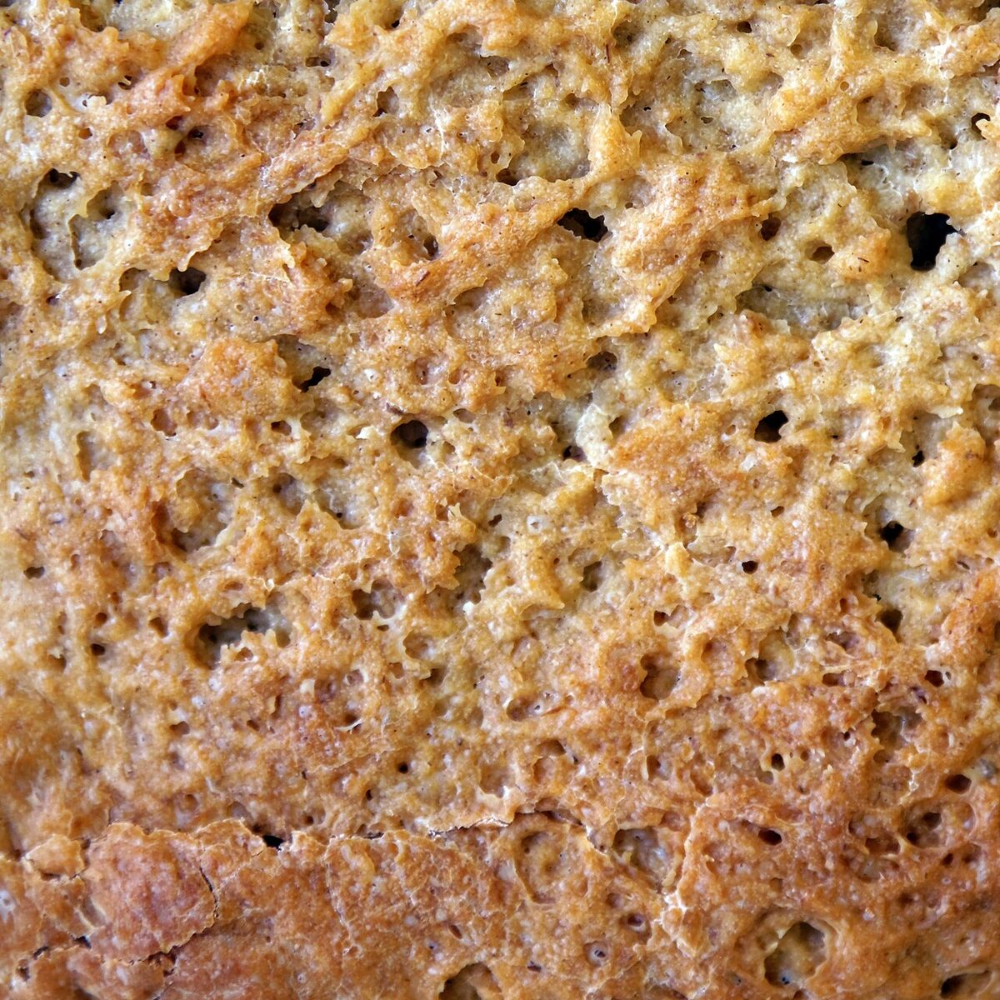
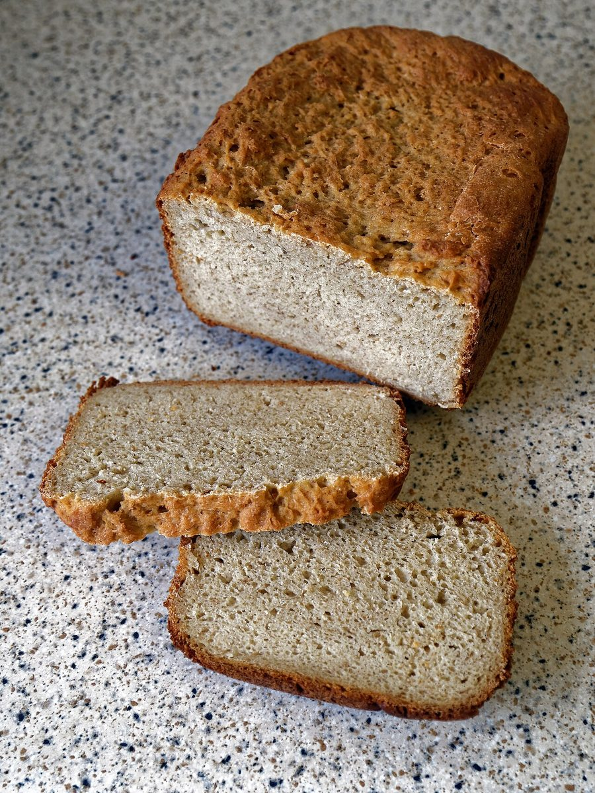
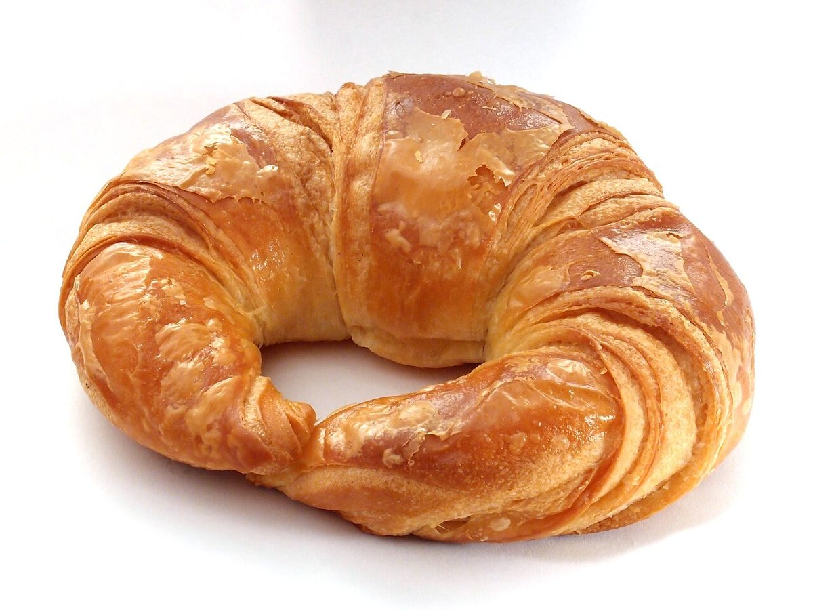
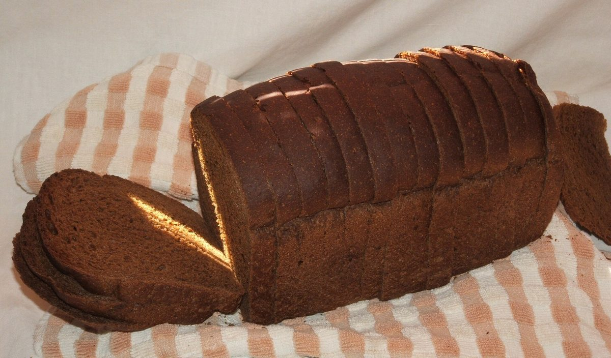

パン屋 / 茨城県日立市
BAKESHOPCORIN
茨城県日立市河原子町にあるパン屋「BAKE SHOP CORIN」のご案内ページです。営業時間やメニューなど、詳しいことは準備中。まずはInstagramをのぞいてみてください。
制作側の連想
屋号の13文字を、ひとつずつ読む
「BAKE SHOP CORIN」はスペースを除くとちょうど13文字です。制作側はそこから、1文字ごとにパンにまつわる英単語をひとつ当てはめる「パン辞典」を思いつきました。Bはバター、Aはアンバー、というように、あくまで遊びです。お店の理念や由来とは無関係で、制作側の連想にすぎません。
十三文字のパン辞典
B から N まで、13枚。
写真はお店のものではなく、国外または撮影地不明のフリー素材のイメージです。お店で扱っているパンを示すものではありません。
BAKE

Butter
バター

Amber
アンバー

Knife-cut
ナイフの切れ込み

Exterior
エクステリア
SHOP

Slice
スライス

Hole
ホール(気泡)

Overhead
オーバーヘッド

Pan loaf
パンローフ
CORIN

Croissant
クロワッサン

Open crumb
オープンクラム

Rye
ライ

Inside
インサイド

No-knead
ノーニード
ご案内
お店のこと(確認できたものだけ)
| 所在地 | 茨城県日立市河原子町４丁目３−６ |
|---|---|
| 電話 | 070-5362-0071 |
| 営業時間 | 準備中 |
| 定休日 | 準備中 |
| ご予約 | 準備中 |
| 駐車場 | 準備中 |
| SNS | Instagram @bake_shop_corin |